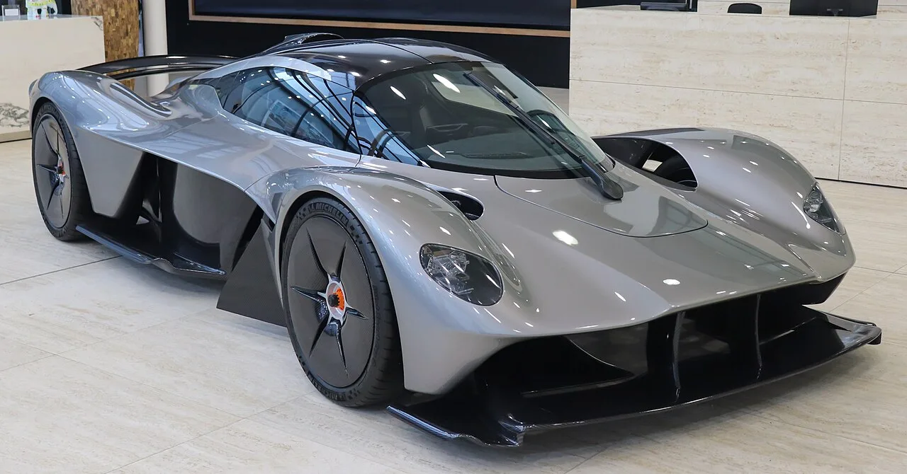

▲ 발키리는 6.5리터 V12를 11,000rpm까지 돌린다 ⓒ Wikimedia Commons (CC BY-SA 4.0)
발키리는 도로용 하이퍼카로 만들어진 차입니다.
그런데 지금은 내구 레이스를 뜁니다.
그리고 출력을 낮춘 채 달립니다. 1,000마력 이상을 낼 수 있는 엔진을 680마력으로 묶어놓습니다.
1. 4월 19일 실버스톤
| 항목 | 내용 |
|---|---|
| 일자 | 2026년 4월 19일(수) |
| 장소 | 실버스톤 그랑프리 서킷 — 3.66마일 |
| 드라이버 | 로스 건, 해리 틴크넬 |
| 목적 | 개발 기술 요소 검증 · 핵심 데이터 확보 |
📍 왜 실버스톤인가
실버스톤은 고속 코너가 연속되는 서킷입니다. 다운포스와 고속 안정성을 확인하기에 적합합니다. 여기에 2027년 4월 23~25일 WEC 영국 라운드가 이곳에서 열릴 예정이라, 미리 데이터를 쌓아두는 의미도 있습니다.
2. 6.5리터 V12, 11,000rpm
| 항목 | 내용 |
|---|---|
| 엔진 | 6.5리터 자연흡기 V12 |
| 최고 회전수 | 11,000rpm |
| 기본 출력 | 1,000마력 이상 |
| 레이스 출력 | 680마력 — 규정 제한 |
11,000rpm은 양산차에서 보기 어려운 숫자입니다. 대부분의 고성능 엔진이 7,000~8,000rpm에서 한계를 만납니다. F1 엔진에 가까운 영역입니다.

▲ 발키리는 도로용 하이퍼카로 출발해 레이스 무대에 올랐다 ⓒ Wikimedia Commons (CC BY-SA 4.0)
3. 왜 출력을 680마력으로 묶나
1,000마력을 680마력으로 낮추는 것이 이상해 보일 수 있습니다.
내구 레이스의 규정 때문입니다. 하이퍼카 클래스는 서로 다른 구조의 차들이 함께 달립니다. 전용 프로토타입도 있고, 발키리처럼 양산차에서 출발한 차도 있습니다.
📍 밸런스 오브 퍼포먼스
출력과 무게를 조정해 차들 사이의 격차를 좁히는 규정입니다. 특정 차가 압도하면 경기가 재미없어지고 참가 팀도 줄어듭니다. 그래서 엔진이 잘 나갈수록 더 많이 깎입니다.
그래서 승부처가 달라집니다. 최고 출력이 아니라 연비, 타이어 관리, 피트 전략, 야간 주행 안정성이 결과를 가릅니다.
| 항목 | 내용 |
|---|---|
| 연비 | 급유 횟수를 줄이면 피트 시간이 줄어듦 |
| 타이어 관리 | 스틴트를 길게 가져갈 수 있음 |
| 신뢰성 | 완주하지 못하면 속도는 의미가 없음 |
| 드라이버 교대 | 여러 명이 같은 페이스를 낼 수 있어야 함 |
4. 성적이 오르고 있다
| 시리즈 | 내용 |
|---|---|
| WEC | 상파울루 6시간에서 두 대 모두 첫 포인트 |
| IMSA | 7차례 출전 중 6차례 톱10 |
'두 대 모두 포인트'라는 표현이 중요합니다. 한 대만 잘 달린 것이 아니라 차 자체가 안정된 단계에 들어섰다는 신호이기 때문입니다.
IMSA의 7전 중 6차례 톱10도 같은 맥락입니다. 내구 레이스에서 꾸준히 완주하며 상위권에 든다는 것은, 신뢰성 문제가 상당 부분 정리됐다는 뜻입니다.

▲ 애스턴마틴은 도로용 고성능 라인업과 모터스포츠를 함께 끌고 가고 있다 ⓒ Aston Martin
5. 이 도전이 갖는 의미
발키리는 하이퍼카 클래스에서 독특한 위치에 있습니다.
✅ 다른 참가 차량과 다른 점
· 양산 하이퍼카에서 출발했습니다 — 처음부터 레이스용으로 설계된 프로토타입이 아닙니다
· 자연흡기 V12를 씁니다 — 하이브리드 터보가 주류인 클래스에서 예외적입니다
· 소리가 다릅니다 — 11,000rpm V12의 음역대는 이 클래스에서 유일합니다
· 규정상 불리할 수 있습니다 — 그럼에도 성적을 내고 있다는 점이 평가받습니다
다음 무대는 정해져 있습니다. 2027년 4월 23~25일 실버스톤에서 WEC 영국 라운드인 실버스톤 6시간 레이스가 열립니다.
이 대회 자체가 하나의 사건입니다. WEC가 영국에서 경기를 여는 것은 2019년 이후 8년 만이기 때문입니다. 영국 브랜드인 애스턴마틴에게는 홈 라운드의 부활이기도 합니다. 이번 테스트에서 쌓은 데이터가 그곳에서 쓰이게 됩니다.

▲ 모터스포츠에서 얻은 데이터는 양산 고성능 모델로도 흘러간다 ⓒ Wikimedia Commons
6. 정리
애스턴마틴 THOR 팀이 4월 19일 실버스톤 그랑프리 서킷에서 발키리 종합 테스트를 마쳤습니다. 드라이버는 로스 건과 해리 틴크넬이었습니다.
발키리는 6.5리터 V12를 11,000rpm까지 돌려 1,000마력 이상을 내지만, 레이스에서는 규정에 따라 680마력으로 제한됩니다. 그래서 승부는 연비와 타이어 관리, 신뢰성에서 갈립니다.
2026 시즌 성적은 오르고 있습니다. 상파울루 6시간에서 두 대 모두 첫 포인트를 얻었고, IMSA에서는 7전 중 6차례 톱10에 들었습니다. 다음 실버스톤 WEC 라운드는 2027년 4월 23~25일입니다.